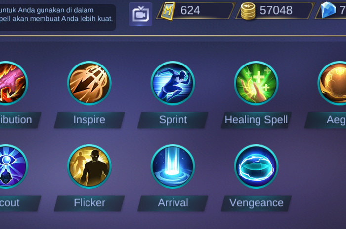

Battle Spells are unique spells that you choose before the start of each game. Using the right Battle Spell can turn the battle in your favor.
Battle Spells give your hero an advantage. Pick Battle Spells that compliment your hero, or make up for your hero’s weakness. For example, Fighter role is know for going in and out in the battle so the best spell for it is a Flicker that helps you teleport in a distance in a split seconds. Assassins role is known for taking down enemy in a split second so execute suits best for assassins because iexecute can deal massive true damage in enemy.
There are 12 Battle Spells in Mobile Legends. Each are unlocked once your account passes a certain level. To unlock all Battle Spells, your account neede to reach level 23.
Here are the list of Battle Spells and their effects.
Deal 200 (+20 per level) (+10% Missing HP) True Damage that ignores all Shield Effects to an enemy hero. If Execute kills the target, its cooldown is reduced by 40%.
Deal 600 (+80*Hero Level) True Damage to a Jungle Monster or Enemy Minion. Carrying a Jungling Item, decreases the damage taken from Jungle Monsters or Enemy Minions by 50%.
Enhances the Hero's Basic Attack for 5 seconds, increasing the Hero's Attack Speed by 55% and ignoring 9 (+1 per level) Physical Defense for the next 8 Basic Attacks.
Increases Hero Movement Speed by 40% for 8 seconds. Within the first 3 seconds, gain reduced Time Controlled and Immunity to Slow Effects, after which the Movement Speed will decay.
Summons a healing spring which heals allies within the area 2.8% Max HP every 0.5 second for 5 seconds, for a total maximum heal of 28% Max HP. Additionally enhances the shields and heals allies receive by 25%.
Shields the Hero for 800 (+50 per level) Shield and a nearby ally with the lowest HP, 70% of the original shield value, or 360 (+25 per level) Shield.
Deal 115 (+15 per level) Magic Damage and petrify surrounding enemies for 0.8 seconds.
Removes all negative effects and crowd control effects from Hero. Grants immunity to crowd control effects and 30% increased movement speed for 1.2 seconds.
Fires a flaming shot in a designated direction knocking back enemies in the front or deal 160 to 640 (+60% to +180% Magic Power) Magic Damage based on distance traveled, to the enemies hit and slowing them by 60% for 0.5 seconds.
Teleports the Hero for a certain distance to specified direction. Increases Physical Defense and Magic Defense by 6 (+1 per level) for 1 second.
Teleports to an allied turret (including destroyed turrets) or allied minion after chanting for 3 seconds. Increases the movement speed by ??? decaying within 3 seconds. Additionally enhances the next Basic Attack to deal 110 (+10 per level) True Damage and slow the target by 45% for 1 second.
For the next 3 seconds, the Hero reduces the damage taken by 35%. Additionally deals 50 + 25% of the damage recieved (pre-damage reduction) Magic Damage back to the attacker.